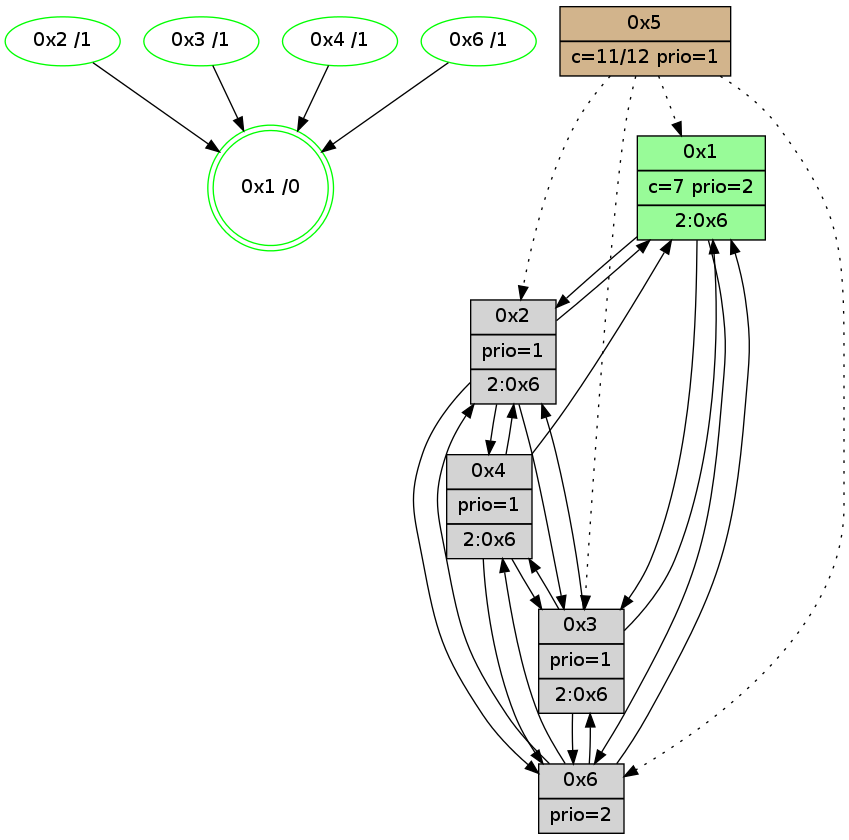

>> << IDX [start] -100 -25 -5 +0 +5 +25 +100 [950.410544157]
 Previous packets
945.007309 beacon02(adaf) #0 coord=01,02,05,03,04,06 cycle=432.0ms assoc 64 99 d2
945.017310 beacon05(adaf) #0 coord=01,02,05,03,04,06 cycle=432.0ms assoc 64 3f f8
945.027309 beacon03(adaf) #0 coord=01,02,05,03,04,06 cycle=432.0ms assoc 64 a3 dc
945.037310 beacon04(adaf) #0 coord=01,02,05,03,04,06 cycle=432.0ms assoc 64 05 f6
945.047310 beacon06(adaf) #0 coord=01,02,05,03,04,06 cycle=432.0ms assoc 64 71 ea
945.059070 [Hello(2): seq=1239 sym=3,6,1,4 sysInfo=hasWarning stat=3:8,3,4,1/6:9,7,3,0/1:1,6,0,0/4:6,8,3,1]
945.063383 [Color(4) seq=105 @0:0 prio=1 >2.@6,1.@3 c=7;1,4,6,8,9,b]
945.070975 [Hello(1): seq=650 sym=2,4,3 sysInfo=hasWarning,coloring-mode-on,ColoringModeRequestCalled stat=2:1,5,11,2/4:5,8,5,1/3:2,1,2,0]
----------------------------------------------------------------------
945.489457 beacon01(adaf) #0 coord=01,02,05,03,04,06 cycle=432.0ms assoc
-- color-indic=1 64 0c 42
945.499417 beacon02(adaf) #0 coord=01,02,05,03,04,06 cycle=432.0ms assoc 64 5d bd
945.509419 beacon05(adaf) #0 coord=01,02,05,03,04,06 cycle=432.0ms assoc 64 fb 97
945.519419 beacon03(adaf) #0 coord=01,02,05,03,04,06 cycle=432.0ms assoc 64 67 b3
945.529418 beacon04(adaf) #0 coord=01,02,05,03,04,06 cycle=432.0ms assoc 64 c1 99
945.539419 beacon06(adaf) #0 coord=01,02,05,03,04,06 cycle=432.0ms assoc 64 b5 85
945.551160 [Hello(4): seq=751 sym=2,1,6 sysInfo=hasWarning stat=2:5,8,2,0/1:15,13,7,0/6:0,6,0,0]
945.553412 [Color(1) seq=177 @0:0 color=7 prio=2 >2.@6 c=1,4,6,8,9,b;0,2,3,5,a]
945.555692 [Color(2) seq=138 @0:0 prio=1 c=7;1,4,6,8,9,b]
945.557446 [Hello(6): seq=664 sym=2,1,3 sysInfo=hasWarning stat=2:8,12,9,1/1:12,5,6,1/3:13,7,15,3]
945.561121 [Color(6) seq=136 @0:0 prio=2 c=7;1,4,6,8,9,b]
----------------------------------------------------------------------
945.981564 beacon01(adaf) #0 coord=01,02,05,03,04,06 cycle=432.0ms assoc
-- color-indic=1 64 40 f2
945.991526 beacon02(adaf) #0 coord=01,02,05,03,04,06 cycle=432.0ms assoc 64 11 0d
946.001525 beacon05(adaf) #0 coord=01,02,05,03,04,06 cycle=432.0ms assoc 64 b7 27
946.011528 beacon03(adaf) #0 coord=01,02,05,03,04,06 cycle=432.0ms assoc 64 2b 03
946.021527 beacon04(adaf) #0 coord=01,02,05,03,04,06 cycle=432.0ms assoc 64 8d 29
946.031527 beacon06(adaf) #0 coord=01,02,05,03,04,06 cycle=432.0ms assoc 64 f9 35
946.042717 [Hello(1): seq=651 sym=2,4,6,3 sysInfo=hasWarning,coloring-mode-on,ColoringModeRequestCalled stat=2:1,6,11,2/4:5,8,5,1/6:0,1,0,0/3:2,1,2,0]
946.045390 [Color(4) seq=106 @0:0 prio=1 >2.@6,1.@3 c=7;1,4,6,8,9,b]
946.046940 [Hello(2): seq=1240 sym=3,6,1,4 sysInfo=hasWarning stat=3:8,3,4,1/6:10,8,3,0/1:2,6,0,0/4:6,9,3,1]
----------------------------------------------------------------------
946.473674 beacon01(adaf) #0 coord=01,02,05,03,04,06 cycle=432.0ms assoc
-- color-indic=1 64 84 9d
946.483634 beacon02(adaf) #0 coord=01,02,05,03,04,06 cycle=432.0ms assoc 64 d5 62
946.493634 beacon05(adaf) #0 coord=01,02,05,03,04,06 cycle=432.0ms assoc 64 73 48
946.503635 beacon03(adaf) #0 coord=01,02,05,03,04,06 cycle=432.0ms assoc 64 ef 6c
946.513637 beacon04(adaf) #0 coord=01,02,05,03,04,06 cycle=432.0ms assoc 64 49 46
946.523636 beacon06(adaf) #0 coord=01,02,05,03,04,06 cycle=432.0ms assoc 64 3d 5a
946.535323 [Hello(3): seq=750 sym=6,4,1,2 sysInfo=hasWarning stat=6:15,3,3,2/4:0,4,8,0/1:9,5,1,1/2:2,8,3,0]
946.537999 [Hello(6): seq=665 sym=2,1,3 sysInfo=hasWarning stat=2:9,12,9,1/1:13,5,6,1/3:14,7,15,3]
946.539921 [Color(2) seq=139 @0:0 prio=1 c=7;1,4,6,8,9,b]
946.542766 [Color(6) seq=137 @0:0 prio=2 c=7;1,4,6,8,9,b]
946.544423 [Hello(4): seq=752 sym=2,1,6 sysInfo=hasWarning stat=2:6,9,2,0/1:0,14,7,0/6:1,7,0,0]
946.551320 [STC(1) #0.125 new-neigh,tree-change,inconsistent-stability,stable,to-color d=0]
946.552952 [Color(1) seq=178 @0:0 color=7 prio=2 >2.@6 c=1,4,6,8,9,b;0,2,3,5,a]
----------------------------------------------------------------------
946.965781 beacon01(adaf) #0 coord=01,02,05,03,04,06 cycle=432.0ms assoc
-- color-indic=1 64 a1 a0
946.975743 beacon02(adaf) #0 coord=01,02,05,03,04,06 cycle=432.0ms assoc 64 f0 5f
946.985744 beacon05(adaf) #0 coord=01,02,05,03,04,06 cycle=432.0ms assoc 64 56 75
946.995742 beacon03(adaf) #0 coord=01,02,05,03,04,06 cycle=432.0ms assoc 64 ca 51
947.005743 beacon04(adaf) #0 coord=01,02,05,03,04,06 cycle=432.0ms assoc 64 6c 7b
947.015744 beacon06(adaf) #0 coord=01,02,05,03,04,06 cycle=432.0ms assoc 64 18 67
947.027319 [STC(6)->1 #0.125 new-neigh,tree-change,inconsistent-stability,stable,to-color d=1]
947.028985 [Hello(1): seq=652 sym=2,4,6,3 sysInfo=hasWarning,coloring-mode-on,ColoringModeRequestCalled stat=2:2,6,11,2/4:5,9,5,1/6:0,1,0,0/3:3,1,2,0]
947.031265 [STC(3)->1 #0.125 new-neigh,tree-change,inconsistent-stability,stable,to-color d=1]
947.033067 [STC(4)->1 #0.125 new-neigh,tree-change,inconsistent-stability,stable,to-color d=1]
947.034486 [TreeStatus(3)-.->1 #0.125 new-neigh,tree-change,inconsistent-stability,stable child=1]
947.036313 [Color(4) seq=107 @0:0 prio=1 >2.@6,1.@3 c=7;1,4,6,8,9,b]
947.042678 [Hello(2): seq=1241 sym=3,6,1,4 sysInfo=hasWarning stat=3:8,3,4,1/6:10,9,3,0/1:2,7,1,0/4:7,9,3,1]
947.045515 [STC(2)->1 #0.125 new-neigh,tree-change,inconsistent-stability,stable,to-color d=1]
----------------------------------------------------------------------
947.457891 beacon01(adaf) #0 coord=01,02,05,03,04,06 cycle=432.0ms assoc
-- color-indic=1 64 65 cf
947.467851 beacon02(adaf) #0 coord=01,02,05,03,04,06 cycle=432.0ms assoc 64 34 30
947.477852 beacon05(adaf) #0 coord=01,02,05,03,04,06 cycle=432.0ms assoc 64 92 1a
947.487852 beacon03(adaf) #0 coord=01,02,05,03,04,06 cycle=432.0ms assoc 64 0e 3e
947.497852 beacon04(adaf) #0 coord=01,02,05,03,04,06 cycle=432.0ms assoc 64 a8 14
947.507853 beacon06(adaf) #0 coord=01,02,05,03,04,06 cycle=432.0ms assoc 64 dc 08
947.519660 [Hello(4): seq=753 sym=2,1 asym=6 sysInfo=hasWarning stat=2:7,9,3,0/1:0,15,8,0/6:1,7,1,0]
947.522107 [Color(1) seq=179 @0:0 color=7 prio=2 >2.@6 c=1,4,6,8,9,b;0,2,3,5,a]
947.524135 [Color(2) seq=140 @0:0 prio=1 c=7;1,4,6,8,9,b]
947.525942 [Hello(6): seq=666 sym=4,2,1,3 sysInfo=hasWarning stat=4:0,1,1,0/2:10,12,10,1/1:14,6,7,1/3:15,7,0,4]
947.529746 [Color(6) seq=138 @0:0 prio=2 c=7;1,4,6,8,9,b]
----------------------------------------------------------------------
947.949998 beacon01(adaf) #0 coord=01,02,05,03,04,06 cycle=432.0ms assoc
-- color-indic=1 64 29 7f
947.959960 beacon02(adaf) #0 coord=01,02,05,03,04,06 cycle=432.0ms assoc 64 78 80
947.969959 beacon05(adaf) #0 coord=01,02,05,03,04,06 cycle=432.0ms assoc 64 de aa
947.979959 beacon03(adaf) #0 coord=01,02,05,03,04,06 cycle=432.0ms assoc 64 42 8e
947.989961 beacon04(adaf) #0 coord=01,02,05,03,04,06 cycle=432.0ms assoc 64 e4 a4
947.999961 beacon06(adaf) #0 coord=01,02,05,03,04,06 cycle=432.0ms assoc 64 90 b8
948.011708 [Hello(2): seq=1242 sym=3,6,1,4 sysInfo=hasWarning stat=3:8,3,4,1/6:11,10,3,0/1:2,7,1,0/4:7,9,3,1]
948.016057 [Color(4) seq=108 @0:0 prio=1 >2.@6,1.@3 c=7;1,4,6,8,9,b]
948.018022 [Color(3) seq=110 @0:0 prio=1 >2.@6,1.@2,1.@4 c=7;1,4,6,8,9,b]
948.023584 [Hello(1): seq=653 sym=2,4,6,3 sysInfo=hasWarning,coloring-mode-on,ColoringModeRequestCalled stat=2:3,7,12,2/4:5,10,6,1/6:1,2,0,0/3:3,1,3,1]
----------------------------------------------------------------------
948.442108 beacon01(adaf) #0 coord=01,02,05,03,04,06 cycle=432.0ms assoc
-- color-indic=1 64 ed 10
948.452069 beacon02(adaf) #0 coord=01,02,05,03,04,06 cycle=432.0ms assoc 64 bc ef
948.462068 beacon05(adaf) #0 coord=01,02,05,03,04,06 cycle=432.0ms assoc 64 1a c5
948.472068 beacon03(adaf) #0 coord=01,02,05,03,04,06 cycle=432.0ms assoc 64 86 e1
948.482070 beacon04(adaf) #0 coord=01,02,05,03,04,06 cycle=432.0ms assoc 64 20 cb
948.492070 beacon06(adaf) #0 coord=01,02,05,03,04,06 cycle=432.0ms assoc 64 54 d7
948.503776 [Hello(4): seq=754 sym=2,1,6 sysInfo=hasWarning stat=2:7,10,3,0/1:1,0,8,0/6:2,8,1,0]
948.506307 [Hello(6): seq=667 sym=4,2,1,3 sysInfo=hasWarning stat=4:0,2,1,0/2:11,12,10,1/1:15,6,7,1/3:0,8,0,4]
948.508383 [Color(2) seq=141 @0:0 prio=1 >2.@6,1.@3,1.@4 c=7;1,4,6,8,9,b]
948.511180 [Color(6) seq=139 @0:0 prio=2 c=7;1,4,6,8,9,b]
948.512870 [Hello(3): seq=752 sym=6,4,1,2 sysInfo=hasWarning stat=6:1,5,3,2/4:1,5,8,0/1:10,7,2,1/2:3,10,4,0]
948.517458 [Color(1) seq=180 @0:0 color=7 prio=2 >2.@6 c=1,4,6,8,9,b;0,2,3,5,a]
----------------------------------------------------------------------
948.934219 beacon01(adaf) #0 coord=01,02,05,03,04,06 cycle=432.0ms assoc
-- color-indic=1 64 a0 17
948.944180 beacon02(adaf) #0 coord=01,02,05,03,04,06 cycle=432.0ms assoc 64 f1 e8
948.954181 beacon05(adaf) #0 coord=01,02,05,03,04,06 cycle=432.0ms assoc 64 57 c2
948.964179 beacon03(adaf) #0 coord=01,02,05,03,04,06 cycle=432.0ms assoc 64 cb e6
948.974181 beacon04(adaf) #0 coord=01,02,05,03,04,06 cycle=432.0ms assoc 64 6d cc
948.984181 beacon06(adaf) #0 coord=01,02,05,03,04,06 cycle=432.0ms assoc 64 19 d0
948.995681 [Hello(1): seq=654 sym=2,4,6,3 sysInfo=hasWarning,coloring-mode-on,ColoringModeRequestCalled stat=2:3,7,12,2/4:5,10,6,1/6:1,2,0,0/3:3,1,3,1]
948.998345 [Color(3) seq=111 @0:0 prio=1 >2.@6,1.@2,1.@4 c=7;1,4,6,8,9,b]
949.000276 [Color(4) seq=109 @0:0 prio=1 >2.@6,1.@3 c=7;1,4,6,8,9,b]
949.004980 [Hello(2): seq=1243 sym=3,6,1,4 sysInfo=hasWarning stat=3:9,4,4,1/6:11,11,3,0/1:3,8,1,0/4:7,10,3,1]
949.008684 [STC(1) #0.126 new-neigh,tree-change,inconsistent-stability,stable,to-color d=0]
----------------------------------------------------------------------
949.426326 beacon01(adaf) #0 coord=01,02,05,03,04,06 cycle=432.0ms assoc
-- color-indic=1 64 64 78
949.436286 beacon02(adaf) #0 coord=01,02,05,03,04,06 cycle=432.0ms assoc 64 35 87
949.446287 beacon05(adaf) #0 coord=01,02,05,03,04,06 cycle=432.0ms assoc 64 93 ad
949.456287 beacon03(adaf) #0 coord=01,02,05,03,04,06 cycle=432.0ms assoc 64 0f 89
949.466287 beacon04(adaf) #0 coord=01,02,05,03,04,06 cycle=432.0ms assoc 64 a9 a3
949.476287 beacon06(adaf) #0 coord=01,02,05,03,04,06 cycle=432.0ms assoc 64 dd bf
949.488296 [Hello(4): seq=755 sym=2,1,6,3 sysInfo=hasWarning stat=2:8,11,3,0/1:1,1,9,0/6:3,9,1,0/3:0,0,0,0]
949.491000 [Color(1) seq=181 @0:0 color=7 prio=2 >2.@6 c=1,4,6,8,9,b;0,2,3,5,a]
949.492866 [STC(2)->1 #0.126 new-neigh,tree-change,inconsistent-stability,stable,to-color d=1]
949.495835 [STC(6)->1 #0.126 new-neigh,tree-change,inconsistent-stability,stable,to-color d=1]
949.498448 [Color(6) seq=140 @0:0 prio=2 c=7;1,4,6,8,9,b]
949.502711 [STC(4)->1 #0.126 new-neigh,tree-change,inconsistent-stability,stable,to-color d=1]
949.505635 [Color(2) seq=142 @0:0 prio=1 >2.@6,1.@3,1.@4 c=7;1,4,6,8,9,b]
----------------------------------------------------------------------
949.918434 beacon01(adaf) #0 coord=01,02,05,03,04,06 cycle=432.0ms assoc
-- color-indic=1 64 28 c8
949.928394 beacon02(adaf) #0 coord=01,02,05,03,04,06 cycle=432.0ms assoc 64 79 37
949.938396 beacon05(adaf) #0 coord=01,02,05,03,04,06 cycle=432.0ms assoc 64 df 1d
949.948396 beacon03(adaf) #0 coord=01,02,05,03,04,06 cycle=432.0ms assoc 64 43 39
949.958396 beacon04(adaf) #0 coord=01,02,05,03,04,06 cycle=432.0ms assoc 64 e5 13
949.968396 beacon06(adaf) #0 coord=01,02,05,03,04,06 cycle=432.0ms assoc 64 91 0f
949.980138 [Hello(2): seq=1244 sym=3,6,1,4 sysInfo=hasWarning stat=3:9,4,4,1/6:11,11,3,0/1:3,8,2,0/4:7,10,3,1]
949.984476 [Color(4) seq=110 @0:0 prio=1 >2.@6,1.@3 c=7;1,4,6,8,9,b]
949.986435 [Color(3) seq=112 @0:0 prio=1 >2.@6,1.@2,1.@4 c=7;1,4,6,8,9,b]
949.991735 [Hello(1): seq=655 sym=2,6,3 sysInfo=hasWarning,coloring-mode-on,ColoringModeRequestCalled stat=2:3,8,13,2/6:1,3,1,0/3:3,1,3,1]